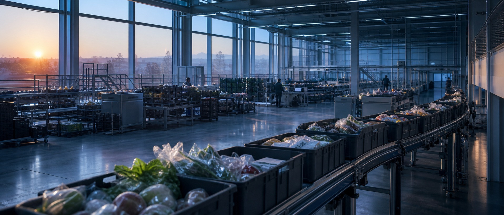

Annual Growth Report
2025, 새벽이 만든 숫자들

한 해의 요약2025.01 – 2025.12 · 단위 누적 기준
2021년 성수동의 작은 새벽 물류창고에서 시작한 새벽상점은, 4년 만에 다섯 개 도시에 신선식품을 배송하는 팀이 되었습니다. 2025년의 숫자를 먼저 요약합니다.
연간 배송 완료 — 하루 평균 1.1만 건
30일 재구매율 — 전년 대비 +9%p
누적 주문 고객 — 활성 고객 21만 명
구성원 — 물류·개발·MD·CS 4개 본부
출처 · 새벽상점 내부 운영 데이터(2025.12.31 마감 기준). 배송 완료 건은 반품·취소 제외.
성장 곡선월별 주문량으로 본 한 해
겨울, 완만한 출발
연초 1월부터 4월까지 주문량은 월 20만 건 초반에서 25만 건으로 천천히 올라갔습니다. 신규 유입보다 기존 고객의 주 1회 정기 장보기가 성장을 떠받쳤습니다.
5월, 곡선이 꺾여 오른다
5월 부산 진출과 함께 곡선의 기울기가 달라집니다. 5월부터 8월까지 주문량은 29만에서 40만 건으로, 넉 달 만에 약 1.4배 늘었습니다.
+38.9%12월, 48.1만 건
김장·명절 수요가 겹친 4분기에 정점을 찍었습니다. 12월 단월 주문량은 48.1만 건으로 연중 최고치, 1월 대비 2.3배였습니다.
48.1만 건지역 확장수도권에서 다섯 도시로
서울, 172만 건
전체 주문의 41.7%는 서울에서 나왔습니다. 성수 물류센터를 축으로 강남·마포·성동 3개 권역이 초기 수요를 견인했습니다.
경기·인천으로
2023년 김포 물류센터를 열며 경기(118만 건)와 인천(43만 건)이 더해졌습니다. 수도권 세 지역이 전체의 80.3%를 차지합니다.
부산, 52만 건
2025년 5월, 새벽상점은 처음으로 수도권을 벗어났습니다. 부산 사상 물류센터 개소 7개월 만에 52만 건을 배송하며 남부권 거점을 만들었습니다.
대구, 그리고 예정 도시
연말 합류한 대구(27만 건)에 이어, 2026년에는 대전·광주(점선) 진출을 준비합니다. 내년 목표는 배송 권역 7개 도시입니다.
고객의 하루언제 문을 열고, 얼마나 다시 오는가
대부분은 해 뜨기 전에 도착한다
전체 배송의 74%가 오전 6시 이전에 완료됩니다. 고객이 잠든 사이 문 앞에 도착하는 것 — 그것이 새벽상점이 지키는 한 가지 약속입니다.
새벽 4~6시, 전체의 41%
배송이 가장 몰리는 두 시간입니다. 이 구간의 정시 도착률을 높이기 위해 2025년 상반기 라스트마일 동선을 재설계했습니다.
재구매율 74%
한 번 주문한 고객 10명 중 7명 이상이 30일 안에 다시 주문했습니다. 신선도 클레임률을 0.4%까지 낮춘 것이 재구매를 지탱한 핵심 지표였습니다.
다음 새벽2026년, 세 가지 약속
- 01
배송 권역 7개 도시
대전·광주 물류센터를 열어 남부·중부권을 잇습니다. 목표 연 배송 600만 건.
- 02
산지 직계약 120곳
생산자 직계약 비중을 68%까지 높여 신선도와 가격을 동시에 지킵니다.
- 03
재사용 포장 100%
2026년 말까지 새벽박스 회수·재사용 체계를 전 권역으로 확대합니다.
다음 리포트는 2026년 12월에 발행됩니다.
뉴스레터로 새벽상점 소식 받기
발행 · 새벽상점 주식회사 | 리포트 문의 · report@saebyeok.example.kr
본 리포트의 모든 수치는 가상의 데모 데이터입니다.